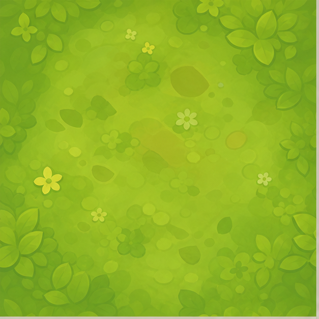
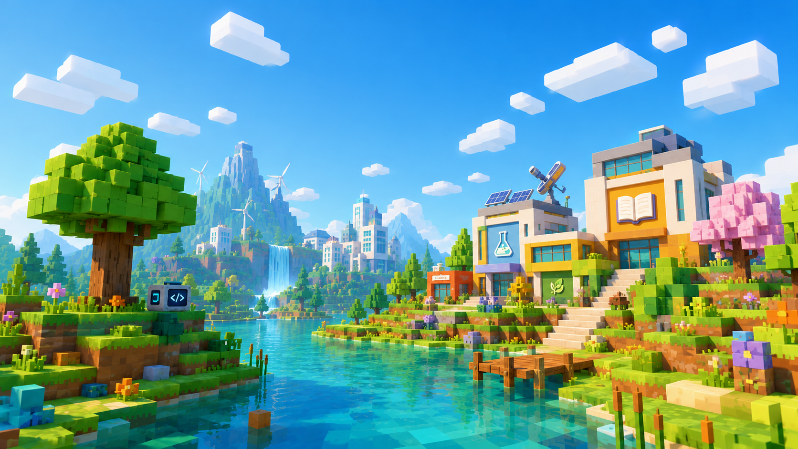

Build environments that make an idea visible
Learners can shape places, compare designs, tell stories through space, and explain why they made each choice to the rest of the group.
OpenClassCraft is an open-source classroom platform for building subject worlds, guiding group activities, and giving students a place to explore, make, discuss, and learn together.
For schools, clubs, workshops, educators, and young makers.

More than codingScience, making, storytelling, problem-solving, building, and programming can share one world.
Teacher-led, student-activeEducators set the purpose while learners explore, create, and work together.
Local and open sourceRun classroom worlds on your own network and adapt the project to your community.
A lesson can become a place to visit: a science lab, a designed habitat, a guided field study, a collaborative build, or a programming challenge when coding supports the learning goal.
OpenClassCraft now connects preparation, the live world, group activity, and progress review without forcing every lesson into the same subject or task.
Prepare objectives, student groups, and useful checkpoints before class.
Add guides, boards, experiments, custom interactions, or building areas.
Learners explore, build, test, discuss, create, or code together.
Record checkpoint progress, add notes, and use the results to improve the next lesson.
Map a habitat, identify relationships between living things, and propose one way to protect it.
Read the field brief together.
Explore the shared habitat in groups.
Make one change and present the reasoning.
One helps educators prepare and review learning. The other helps teachers and creators build safe custom interactions without beginning with Lua code.
Plan lessons, organize classes and groups, assign worlds, track checkpoints, write teacher notes, and export reports from a separate local desktop application.
24Students
4Groups
6Lessons
GroupLesson
CedarRainforest Study
RiverBuild a Water Filter
Design classroom blocks and interactions with a visual editor. Choose an event, connect safe actions and logic, preview the result, and export a self-contained OpenClassCraft mod.
Lessons can be prepared before class, guided inside the world with boards and NPCs, and reviewed afterwards through local progress records.
Accessibility is treated as an ongoing responsibility. Feedback from learners and educators helps the project improve over time.
Try the platform, bring a lesson idea, report a problem, or contribute to the open-source project.